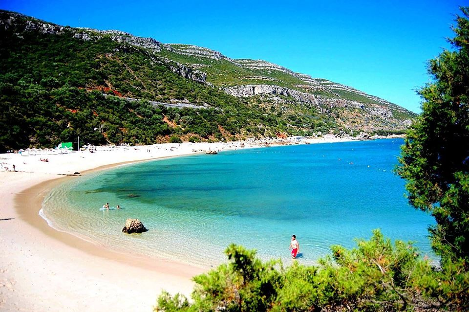

->A Praia de Caminha, também conhecida como Praia da Foz do Minho e Praia do Camarido, tem seu nome devido à antiga abundância de camarinheiras. É protegida por um cordão dunar, que também a separa da Mata Nacional do Camarido. A praia tem um pequeno sector fluvial e outro oceânico.
Praia da Apúlia-Esposende
A Praia da Apúlia uma Praia Oceânica situada na costa de Portugal - Península Ibérica - na União das Freguesias de Apúlia e Fão, concelho de Esposende, banhada pelo Oceano Atlântico. Integra a frente de mar da vila de Apúlia. O seu areal é largo, embora não muito extenso.
Praia da Costa Da Caparica
A Costa da Caparica é conhecida pelas suas praias, que nos últimos anos têm vindo a desaparecer, principalmente junto à foz do rio Tejo. Desde há já alguns anos que se tem presenciado o desaparecimento das praias na Costa da Caparica, nomeadamente as praias junto à foz do rio Tejo, embora este fenómeno já se tenha espalhado às praias mais a sul.
Praia da Zambujeira do Mar
Zambujeira do Mar é uma antiga freguesia portuguesa do município de Odemira, com 42,96 km² de área e 912 habitantes (2011). A sua densidade populacional era 21,2 hab/km². Foi elevada a freguesia em 30 de Junho de 1989 (pertencia antes à freguesia de São Teotónio), sendo a mais pequena do concelho e fica no Alentejo .
Praia de Galapagos-Setubal

Eleita como a Melhor Praia Europeia de 2017[1], pelo site European Best Destinations[2], esta praia, de águas calmas e límpidas, está integrada no Parque Natural da Arrábida, em Setúbal.
Praia da Figueirinha-Setubal
A Praia da Figueirinha é uma praia oceânica localizada a oeste da cidade de Setúbal, inserida no Parque Natural da Arrábida, em Portugal.
Praia da Comporta Grandola
A Comporta é famosa pelas suas praias de enorme qualidade e pelo clima ameno durante o verão.
Praia da Fonte Telha
A Fonte da Telha é uma praia de grande extensão do litoral português, na margem sul do rio Tejo, partilhada entre os municípios de Almada e Sesimbra e as freguesias de Costa de Caparica e Castelo (Sesimbra)[1].